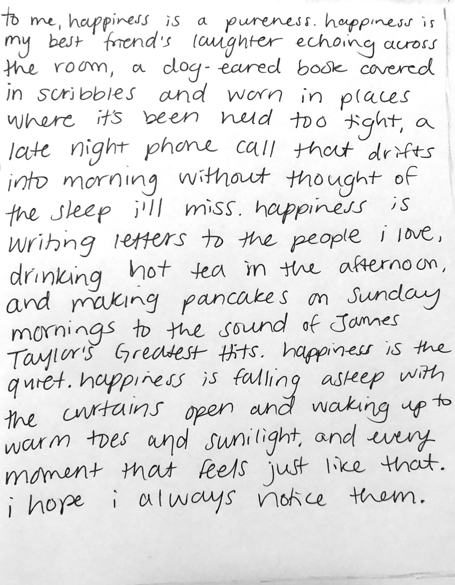
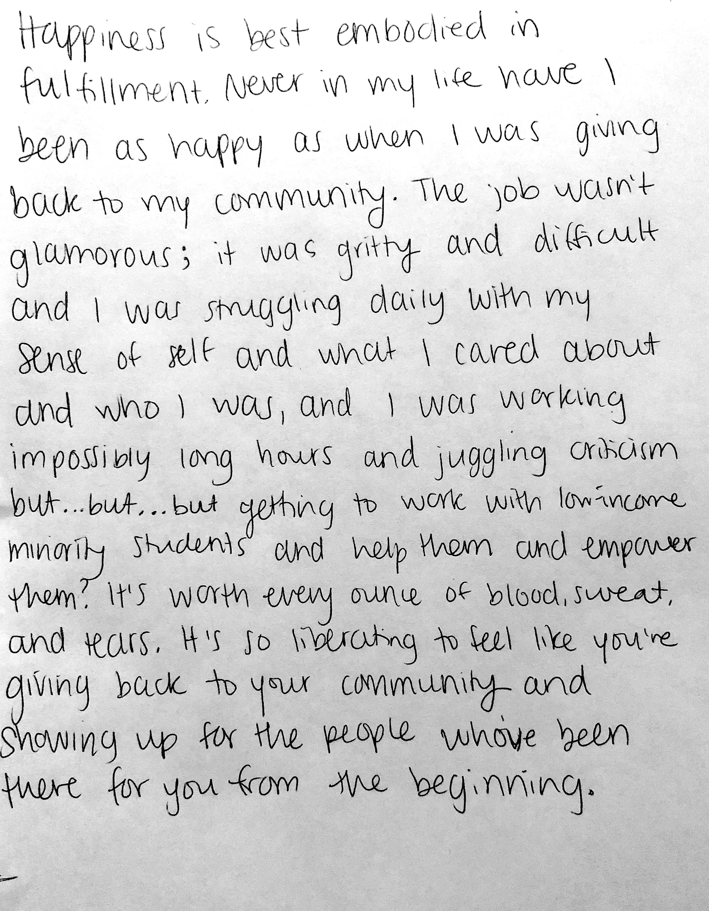
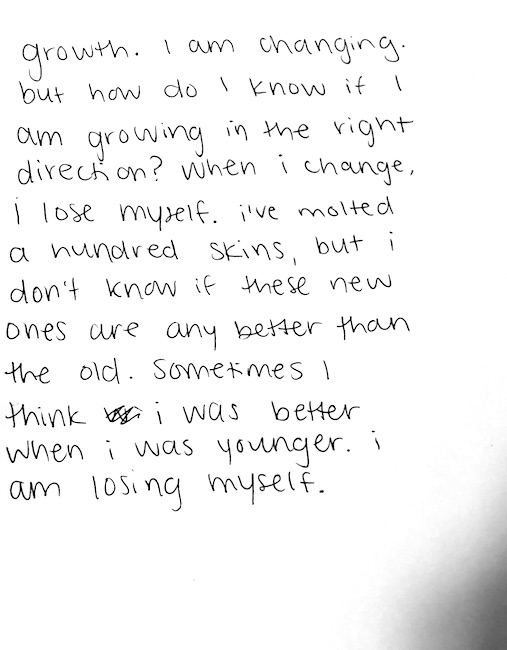
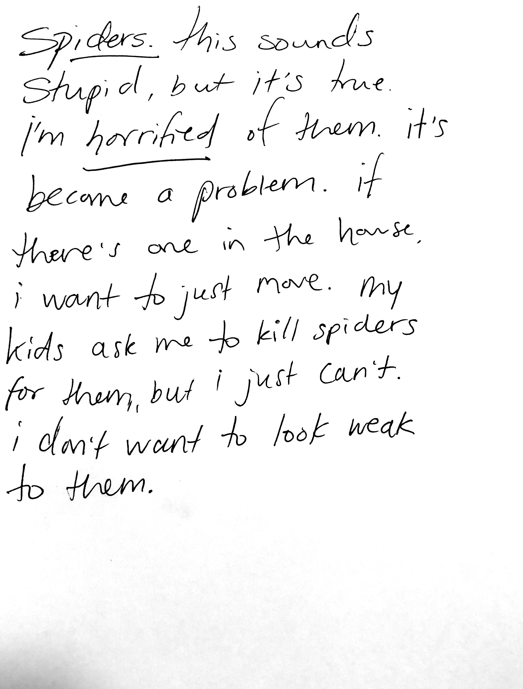
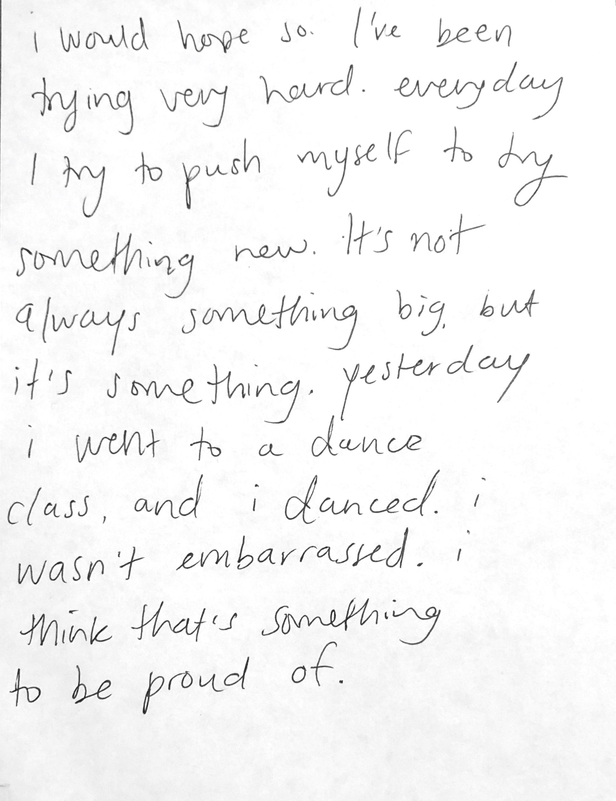
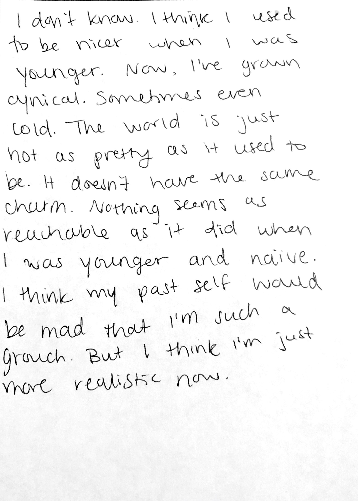
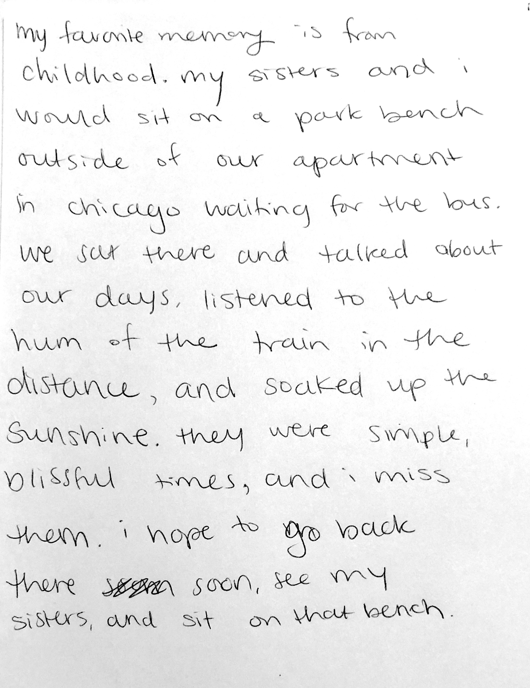
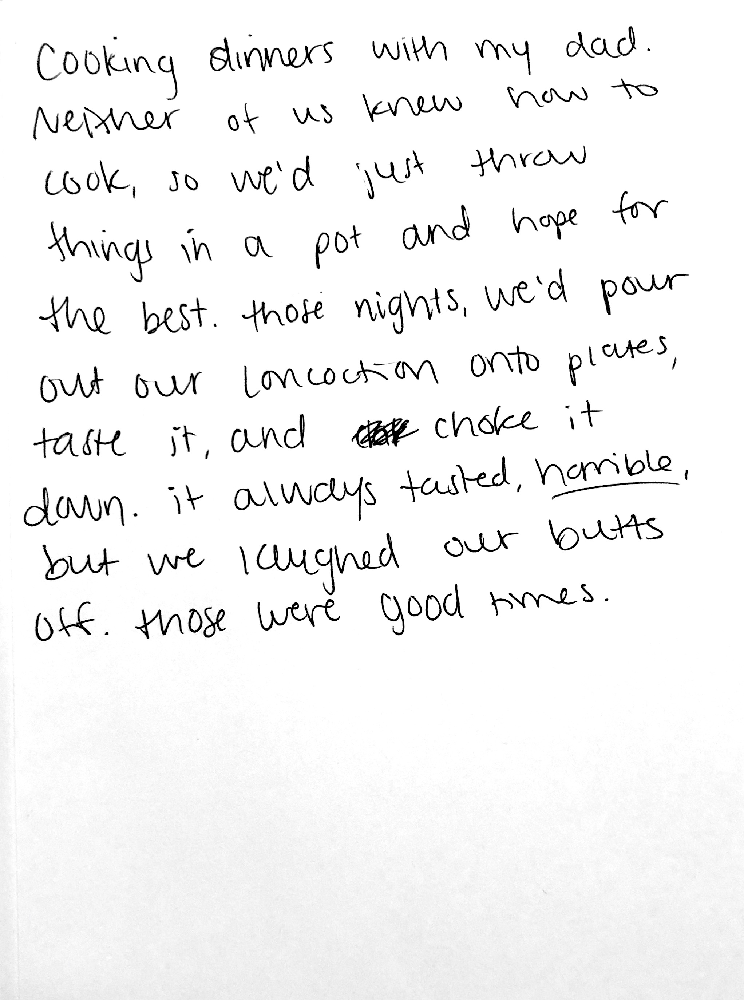

what is happiness?

- boston, ma
i think the most beautiful things in life are those little creative moments when your you comes out. scribbles on papers, new spices in an old recipe, humming a new harmony to a familiar melody. i see that in you, whoever you are. i hope you had a good day and i hope the sun is shining. this question asked what is happiness, and the answer is meeting people like you who remind me that the world is kind and quiet and not that scary after all, filled with people just trying to find slices of love in the simple places they live.
- westborough, ma
i am so proud of you! you made a real impact in the world. you worked to make life easier for others and that makes this world a better place. and not only did you do it, but you found yourself doing it. that's rare. i hope fulfillment always follows behind you through life. i don't think you will have any trouble finding happiness. i think happiness is found when we find ourselves. happiness is truth and authenticity. happiness is found when we live our lives by following what we truly want.
- boston, ma

- boston, ma
what scares you?

- manhattan, ny
life is scary, and growth is one of those terrifying parts of it. but it is also one of the most beautiful parts. don't be scared. you have to have trust in yourself. and i can tell you, you are always growing better. life teaches you lessons, and you learn from each one. as long as you keep listening to those lessons and trying to improve, you are moving in the right direction. it can seem scary to realize you are different than your past self, but it would be scarier to realize you are the same.
- manhattan, ny
that's not stupid. i'm horrified of fish. not everything is deep. sometimes we're scared of stupid things that shouldn't be scary. sometimes those are genuinely the scariest things in our lives. and who cares? not me. i don't think you're weak. tell your kids that they're allowed to be scared of some stupid things too. then they won't be scared to talk about those fears.
- bloomington, in

- columbus, oh
would your past self be proud?

- granby, ct
your handwriting is quite beautiful. hard to read, but gorgeous. i think your past self would and should be proud! you have lots to be proud of. pushing yourself is no easy task, so you are strong for doing that. i used to dance. i loved it. i remember the first time i walked into a dance class, i was terrified. i couldn't stop thinking about how stupid i probably looked, or how the other girls in class would laugh at me. it's not easy putting yourself out there like that to be vulnerable. so whether or not your past self is proud, i'm proud of you.
- granby, ct
i think the world is still reachable. life is not as simple as it seemed when we were younger, but it's not as complicated as everyone makes it seem. if you want something, go get it. i'm scared of turning cynical. you still have time to turn it around if you want to. you need to find the beauty in the world again. what makes you smile? follow it. don't let it go.
- sanbornville, nh

- worcester, ma
what is your favorite memory?

- santa cruz, ca
i hope you made it to chicago! if i could go anywhere in the world, it would be this little park behind an old barn in my hometown. so quiet, so peaceful, so warm and loving. i’ve lived in the city for so long, i miss going to bed and hearing nothing but the gentle roar of crickets.
- los angeles, ca
that's lovely. my dad never knew how to cook either, but he could make good pancakes. my mother was an excellent cook. some of my favorite memories are of her teaching me how to make the perfect meal. she always said it was all about the feeling. she wouldn't use any measurements, so it was really tough to learn from her. it frustrated me for the longest time. it wasn't until i was much older that i finally appreciated her spontenaiety.
- rochester, ny

- houston, tx